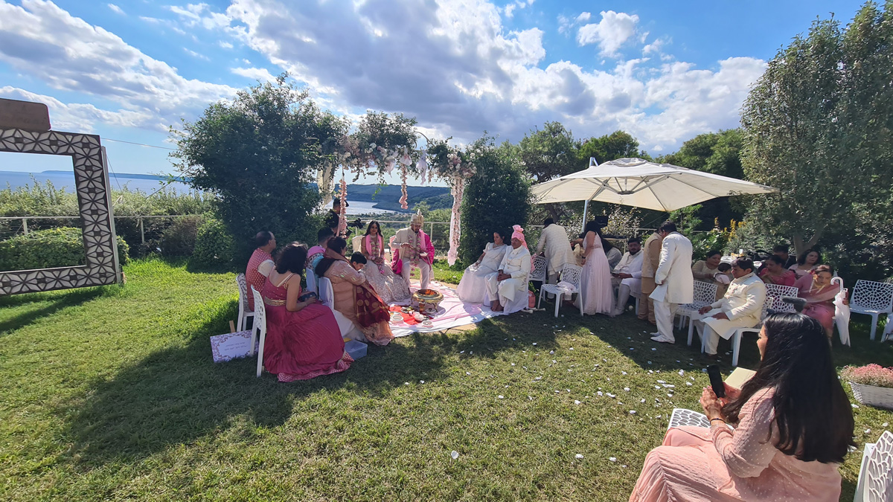
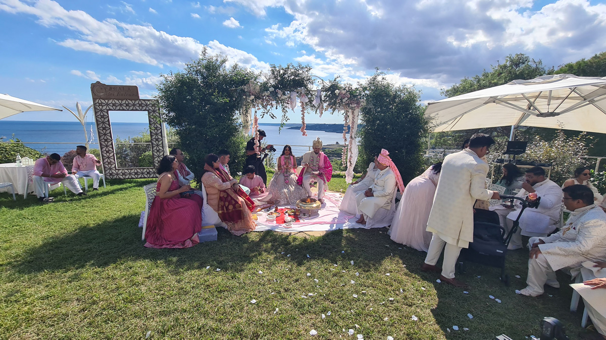

Some weddings cross every cultural border and pull distant traditions into one celebration. That is what happened at Cala dei Balcani when we welcomed an Indian couple to the heart of Salento — three days of rites, colour, music and food that none of us has forgotten.
A Considered Choice
The couple found Cala dei Balcani after a long search online, drawn by its position in Salento, the open natural spaces, the views and the feel of the place. From the first moment it turned out to be the right choice.
One detail made it better still: the dates they chose, 11 to 13 September, fell on the patron saint’s feast of Santa Cesarea Terme. The town’s lights, fireworks and celebrations folded into the wedding, and Indian tradition met the warmth of Salento.
Three Days of Rites
As Indian tradition has it, the wedding ran over three days, each with its own rites:
An exchange of gifts and rings that marks the joining of the two families, with wishes of prosperity and plenty.
An evening of music and dance for joy and family unity — the loudest, happiest night, where every guest joins in.
The bride’s celebration, with henna applied in fine patterns across her hands and arms: a sign of love, fertility and a bond that holds.
The guests’ traditional dress turned the whole place into colour. Red dominated — in Indian tradition the colour of fertility and commitment — against the deep blue of the Adriatic.
A Menu Between India and Salento
The food was one of the high points. Chef Adolfo brought Indian cooking together with the Salento kitchen, building a menu that worked as a conversation between two cultures, two histories, two worlds meeting on the plate.
Eastern spice next to Mediterranean scent, plates that nodded to both traditions: it surprised even the guests who are hard to surprise.
A Venue Built for International Weddings
The weekend confirmed what Cala dei Balcani is for. The property can host couples from any culture, adapting spaces, services and food to each tradition and each set of needs.
Indian, French, British or anything else: the team at Cala dei Balcani is ready to turn any tradition into a celebration above the Salento sea.
Planning an international or multicultural wedding?
Get in touch and we will show you how we can hold your celebration, respecting every tradition and every wish.

